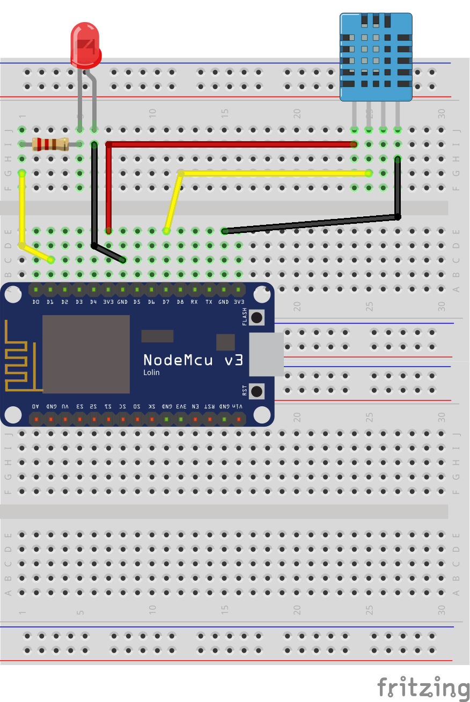

Proyecto Final
Para afianzar conocimientos o poder llegar un poco más allá. Os dejamos dos ejercicios que podéis hacer.
Sensor Temperatura
Para este ejercicio, se necesitará los siguientes materiales:
- 1 Placa ESP32 o Raspberry Pi Pico
- 1 BreadBoard
- 1 Sensor Temperatura HC-11
- 1 led
- 1 resistencia 220Ohmios
- cables Dupont
Seguidamente dejamos el montaje:

Por aquí el código del lector; en este caso, encederá el led si se llega a un umbral de temperatura y humedad:
import dht
from machine import Pin
pindht = Pin(0)
ledpin = Pin(2, Pin.OUT)
dht11 = dht.DHT11(pindht)
while True:
dht1.measure()
temp = dht11.temperature()
hum = dht11. humidity()
if temp > 24 or hum > 55:
ledpin.value(1)
else:
ledpin.value(0)
Sensor Ultrasonidos
Para este ejercicio, necesitaréis los siguientes materiales:
- 1 Placa ESP32 o Raspberry Pi Pico
- 1 breadBoard
- 1 Sensor Ultrasonidos HCSR-04
- 1 led
- 1 resistencia 220 Ohmios
- Cables Dupont
Tras esto, realizamos el siguiente montaje.

Una vez conectado, necesitaremos una librería, para gestionar el sensor de ultrasonidos. Descargar el fichero python de la siguiente dirección:
https://github.com/rsc1975/micropython-hcsr04
Por último, crear el siguiente código fuente:
from hcsr04 import HCSR04
from machine import Pin
sensor = HCSR04(trigger_pin=16, echo_pin=0)
led = Pin(2, Pin.OUT)
while(True):
distance= sensor.distance_cm()
if distance < 5:
led.value(1)
else:
led.value(0)
Una vez escrito el código ya podemos probarlo; viendo si funciona correctamente al poner un obstaculo cerca del sensor.